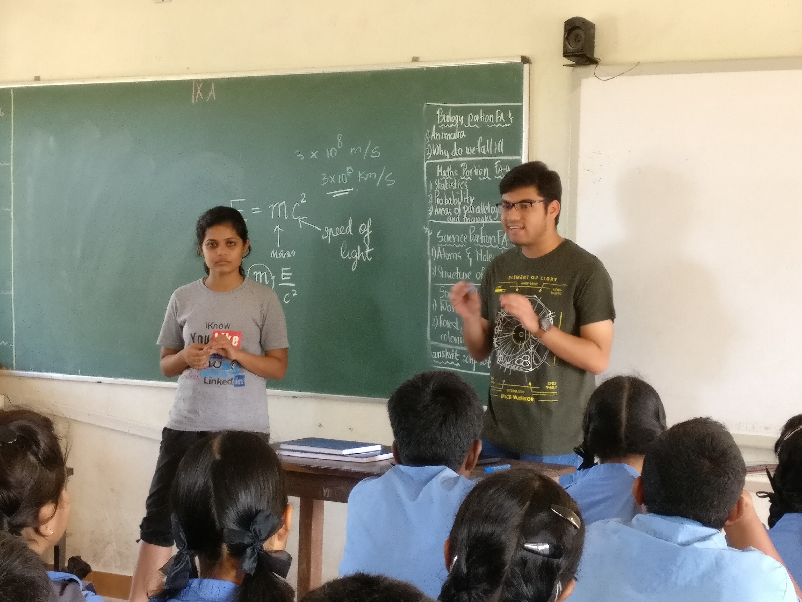
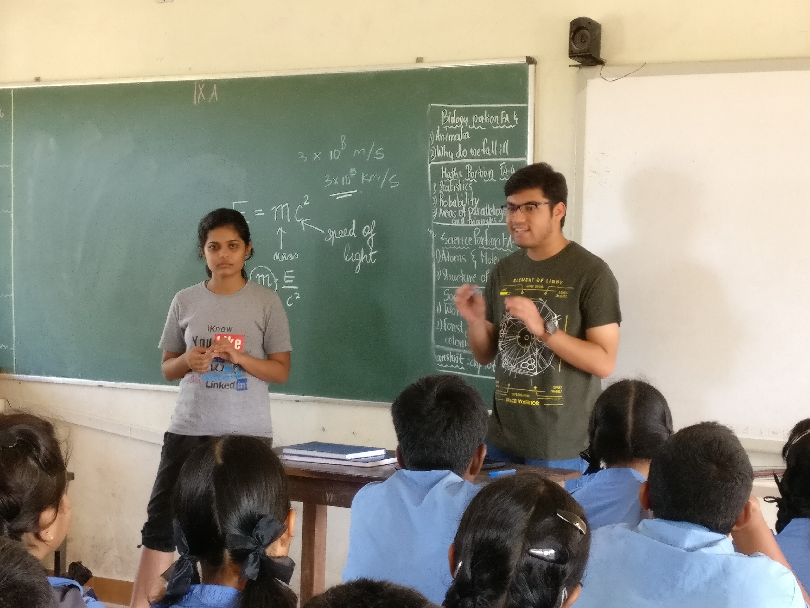
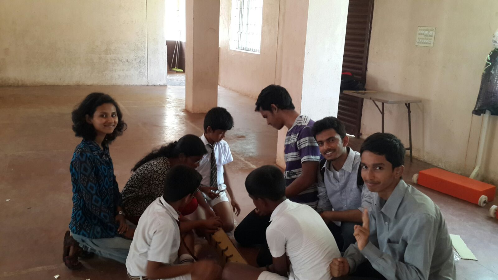
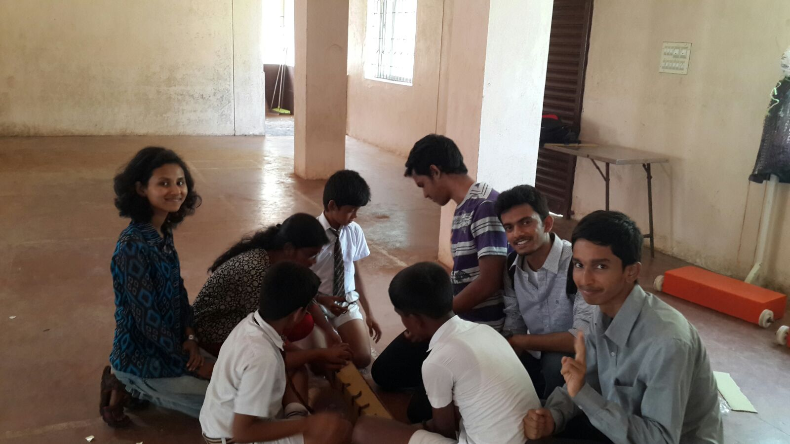

Engineer - Astro Committee
The only club to have its own committee for Engineer! Projects, exhibits quizzes and more!
Starry Nights
Join us on the for a spectacular tour of the night sky through our telescopes
Sci-Tutor
Introducing school children to the wonderful world of Maths and Science
School Workshops
Interactive workshops conducted by members of the club for school children

 

 
